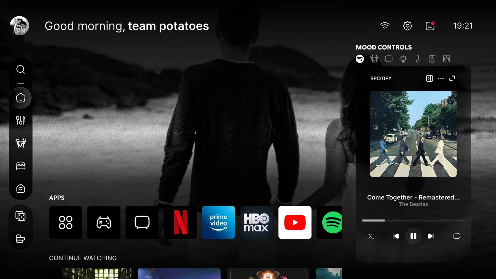
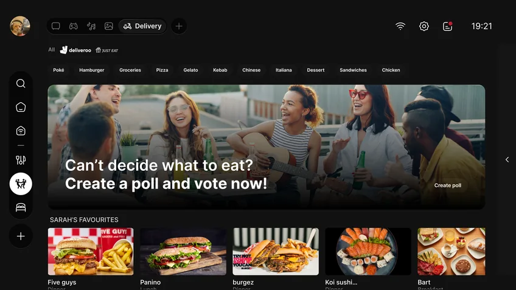
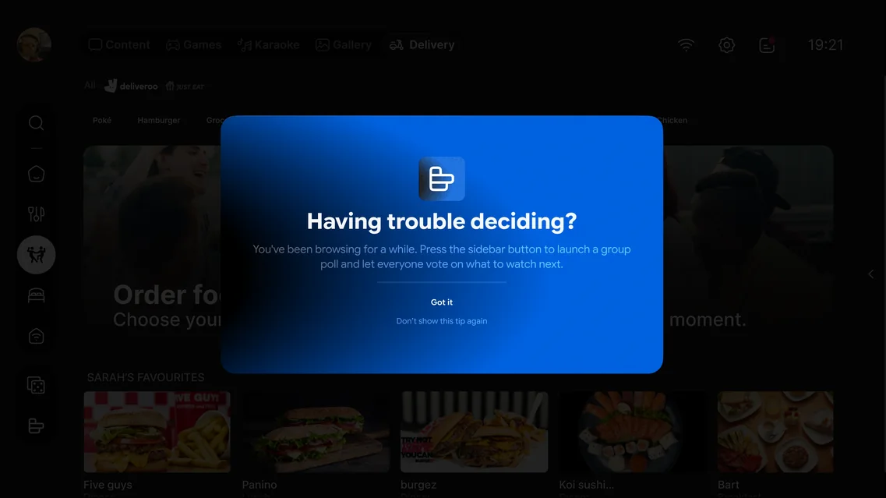
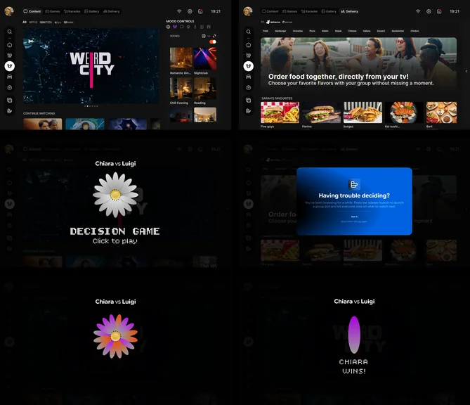

[1] Introduction
The project arises from a contradiction clearly identified during the research phase: watching TV is the most common daily shared activity among young cohabiting couples, yet every level of the current Smart TV ecosystem, from recommendation logic to the physical remote control, is designed with a single user in mind. No system on the market truly accounts for two people watching, deciding, and interacting together.
Moody proposes a Smart TV built around the couple as the primary user, not as an exception to be accommodated in a system designed for one. The physical remote control, developed by teammates, is not covered in this case study.
Developed by a team of 5 for the Digital Design Studio course. My role: the digital prototype and design system in Figma, from mid-fi to hi-fi, and almost all usability tests.
[2] Problem
Current smart TVs optimise for a single viewer: the one who watches, decides, and customises. In a couple, every daily choice, what to watch, who controls the remote, how to divide the interface space when two people have different needs at the same time, creates small frictions that current design simply does not anticipate, because it starts from the wrong assumption: one user, not two.
[3] Digital prototype & design system
The central concept is TV Modes : contextual usage modes, Kitchen Hub for those cooking with the TV on as company, including timer and recipe book, and Social Mode for hosting friends at home, designed to adapt the interface to the real moment, not just the content being watched.
One of the most complex points was the dual-layer couple profile : a personal layer and a couple layer, separate but connected. Validation with card sorting over 6 sessions confirmed that users naturally perceive this distinction; no participant needed explanations to understand where to place "Couple Profile" relative to "Personal Profile." An unexpected detail emerged: while the couple identity was always associated with the Profile section, content generated by that identity, the "Couple recommendations," was systematically associated with the Home. Users separate where an identity is managed from where its value is encountered, guiding the final information structure.
Closed card sorting, 6 sessions. Agreement = participants placing the card in that category.
The complexity of the dual-screen layout (dashboard/split-screen) created, according to our internal assessments, a significant cognitive load, to the point that we skipped the low-fidelity paper wireframe phase and moved directly to animated prototypes bridging low and medium fidelity, so as not to compromise user feedback on an already unconventional concept.
In the final hi-fi version, the navigation structure consolidated into a top bar with the main sections (Content, Games, Karaoke, Gallery, Delivery), a left sidebar for global functions such as the Decision Game, and a right Mood Controls panel for quick controls (Music, Scenes, Screen Saver, Lighting, Temperature, Speaker, Blinds), designed to be summoned without leaving what is being watched.

energy, closeness
play, intimacy
calm, focus
Dark-first UI on a black background · colours never coded by gender or genre: the palette follows the mood, not the person · geometric gradients with grain texture.

[4] Test methodology
The approach, aligned with Cooper and Nielsen's methods, was scenario-driven: each participant received a realistic task to complete within the prototype, without direct instructions on how to proceed, to observe natural behaviour.
Each round used 5 participants: enough to surface about 85% of critical usability issues in a qualitative test, so we could iterate often instead of validating rarely.
Each session tracked four metrics per task: time on task, misclicks, task outcome and SEQ (Single Ease Question, 1 to 7). Together they separate two kinds of problems: a task completed but tiring (high ToT, low SEQ) needs less effort, while a failed task needs a different model.
[5] Iteration
One of the most significant rounds was an in-class test on a hi-fi multi-screen prototype, structured around 5 tasks: access the couple decision game, quickly adjust the environment via Mood Controls, close the Mood Controls panel, find the Delivery section, and complete a group order via a Poll function.
The fourth and fifth tasks produced the clearest result of the entire round. One participant took 54 seconds to complete the task "find the Delivery section and create a group order via Poll," against a median of just 3 seconds among other participants, almost twenty times slower. In the same task: 12 misclicks and a SEQ score of 2 out of 7, the worst recorded in the entire test round.
The cause was not visibility. The "Create a Poll" banner on the Delivery page was large, well positioned and prominent, yet users looked at it and ignored it: it read as an announcement, not as a control. A perceptual categorisation error, not a layout error: size and visibility don't communicate interactivity if an element looks like information.
The fix worked on three fronts at once, shown below.


Final Delivery tab: the Poll lives in the left sidebar and a contextual notification surfaces it while scrolling.

[6] Final results
The project concluded with a final evaluation testing the entire system, digital interface and physical remote control together, through a Wizard of Oz setup with real users, compared with the Fire TV Stick as the market baseline.
The prototype scored 79.0 on the System Usability Scale, against 59.5 recorded by the Fire TV Stick in the same test, a difference of nearly 20 points on the same scale. Positive emotional responses, measured via the PrEmo tool on comparable tasks, rose from 54.5% to 77.5% .
Some limits remain open: discoverability of certain functions, some features tested only with experts rather than real users, and some scenarios that could not be validated in pairs.
[7] Final prototype
Final hi-fi screens: content with Cinematic Views, the Decision Game and the reworked Delivery flow.


[8] Closure
Designing for two, instead of adapting a system built for one, measurably improved usability and emotional response over the market baseline. The full report covers the research, the physical remote control and every test round.
[1] Introduction
Contradiction: watching TV = couples' most common shared daily activity, yet every layer of today's Smart TV (recommendations → remote) is built for one user. No product truly handles two people watching, deciding, interacting together.
→ Moody: Smart TV built around the couple as primary user, not an exception. Physical remote (by teammates) not covered here.
Team of 5 · Digital Design Studio. My role: digital prototype + design system in Figma (mid-fi → hi-fi), almost all usability tests.
Result → SUS 79.0 vs 59.5 for Fire TV Stick.
[2] Problem
Smart TVs optimise for one viewer: who watches, decides, customises. In a couple every daily choice (what to watch, who holds the remote, how to split the screen when needs differ) → small frictions nobody anticipates. Wrong assumption: one user, not two.
[3] Digital prototype & design system
Core concept: TV Modes → interface adapts to the real moment, not just content. Kitchen Hub (cooking with TV on: timer, recipe book) · Social Mode (hosting friends).
Dual-layer couple profile: personal + couple layer, separate but connected. Closed card sorting, 6 sessions → understood with no explanation. Unexpected: couple identity → always Profile (6/6), couple recommendations → always Home (6/6). Users separate where an identity is managed from where its value is found → shaped the final IA.
Dual-screen layout = high cognitive load (internal assessment) → skipped paper wireframes, straight to animated lo/mid-fi prototypes, so feedback on an already unusual concept stayed reliable.
Final hi-fi nav: top bar (Content, Games, Karaoke, Gallery, Delivery) · left sidebar for global functions (Decision Game) · right Mood Controls (Music, Scenes, Screen Saver, Lighting, Temperature, Speaker, Blinds), summoned without leaving what's on screen.
Design system
Dark-first UI · palette by mood: #FF4A14 energy, closeness · #C300FF play, intimacy · #006FFF calm, focus · #D9D9D9 neutral. Colours never coded by gender or genre → palette follows the mood, not the person · geometric gradients + grain.
[4] Test methodology
Scenario-driven (Cooper, Nielsen): realistic task, no instructions → natural behaviour.
5 participants per round ≈ 85% of critical issues → iterate often, don't validate rarely.
4 metrics per task: time on task, misclicks, outcome, SEQ (1–7). Completed but tiring (high ToT, low SEQ) → reduce effort. Failed → change the model.
[5] Iteration
In-class test, hi-fi multi-screen prototype, 5 tasks: Decision Game · adjust Mood Controls · close panel · find Delivery · group order via Poll.
T4–T5 = clearest result: one participant 54s vs 3s median (~20× slower), 12 misclicks, SEQ 2/7 → worst of the round.
Cause ≠ visibility. "Create a Poll" banner: big, well placed, prominent → looked at and ignored. Read as an announcement, not a control. Perceptual categorisation error, not layout: size doesn't signal interactivity if it looks like information.
Fix on 3 fronts: 1. Banner → purely communicative, introduces food delivery via TV · 2. Poll icon → left sidebar, next to Decision Game, where users already look for interactive functions · 3. Notification → contextual nudge while scrolling Delivery, catches intent as it forms.
[6] Final results
Final evaluation: whole system (interface + remote), Wizard of Oz, real users vs Fire TV Stick as baseline.
SUS 79.0 vs 59.5 → ~20 points on the same scale. Positive emotions (PrEmo): 54.5% → 77.5%.
Still open: discoverability of some functions, some features tested only with experts, some scenarios not validated in pairs.
[7] Final prototype
Final hi-fi: Cinematic Views, Decision Game, reworked Delivery.
[8] Closure
Designing for two > adapting a system built for one → measurably better usability and emotional response vs market baseline. Full report: research, physical remote, every test round.